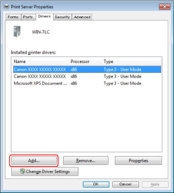
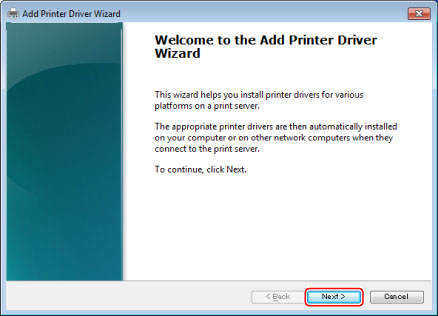
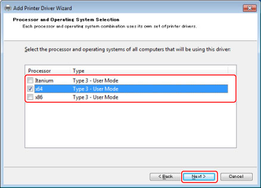
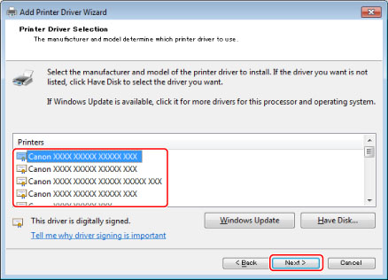
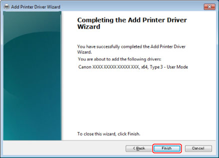

Updating the Alternate Printer Driver
To update the driver manually, follow the procedure below.
|
IMPORTANT
|
|
If the [User Account Control] dialog box appears, perform the following operations.
For Administrator users, click [Allow] or [Continue].
For Standard users, enter the required Administrator password → click [OK].
|
1
Select [Devices and Printers] from the [

] (Start) menu.
If you are using Windows 8/8.1/Server 2012/Server 2012 R2, from the desktop, display the charm bar to the right of the screen, and select [

Settings] - [Control Panel] - [Devices and Printers].
If you are using Windows Vista, select [Control Panel] - [Printers] from the [
] (Start) menu.
2
Click the printer icon for your printer, and select [Print server properties].
If you are using Windows Vista, right-click the blank area in the printers folder, and select [Run as administrator] → [Server Properties].
3
In the [Print Server Properties] dialog box, click the [Drivers] tab.
4
Click [Add].

5
Click [Next] in the Add Printer Driver Wizard.

6
Select the processor type of the computer that is going to use the driver → click [Next].

7
Click [Have Disk].
8
Click [Browse] to specify the driver path → click [OK].
To use the updated printer driver on the client computer, first uninstall the current printer driver → double-click the shared printer icon for the updated alternate printer driver on the server computer (see "
Client Settings").
9
Select the driver you want to update → click [Next].

10
Click [Finish].
